$ til


welcome to my "today i learned" repository - it's filled with short entries of information for my own reference & retention 📓
vim • webdev • terminal • networking • concepts

vim
webdev
- every html meta tag
- collapsible sections in markdown
- python shell
- git change branch master to main
- common mime types